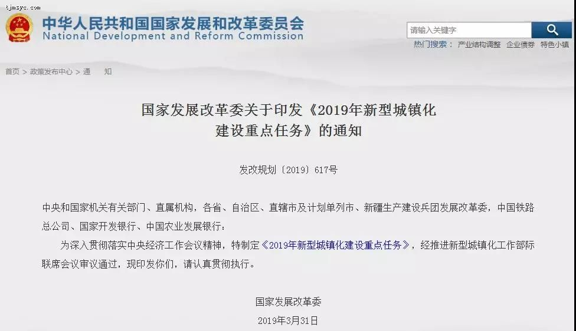
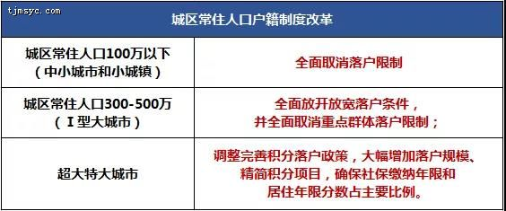
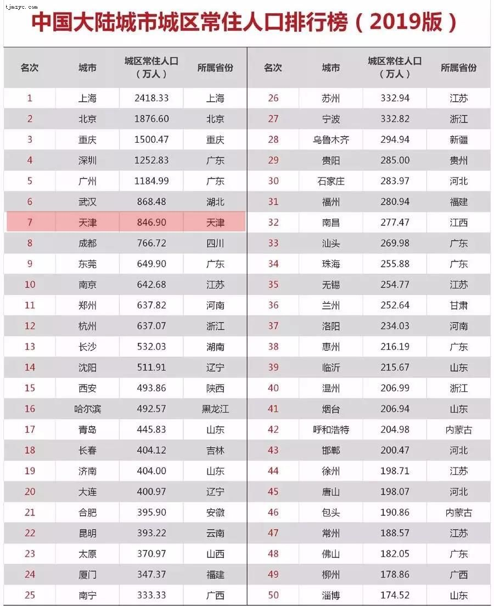
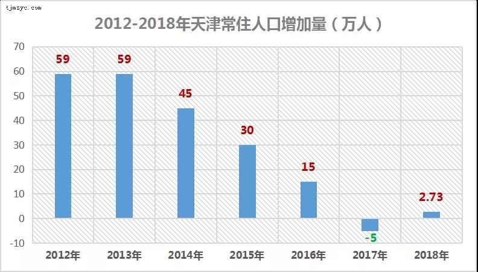
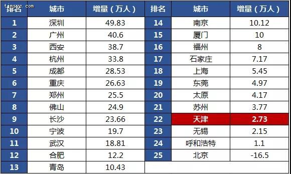
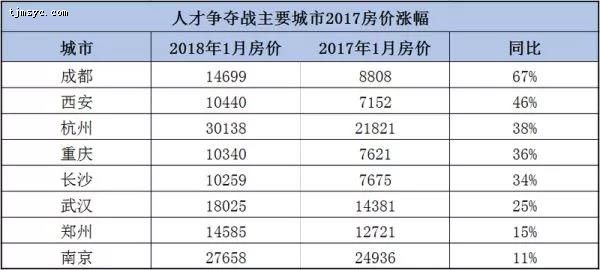

被奉为“神圣”的户籍制度，终于松动了，一场史无前例的“大变革”正在悄然到来。
4月8日国家发改委公布了《2019 年新型城镇化建设重点任务》。

▪ 城区常住人口100-300万的Ⅱ型大城市要全面取消落户限制；
▪ 城市常住人口300-500万的Ⅰ型大城市要全面放开放宽落户条件，并全面取消重点群体落户限制；
▪ 超大特大城市要调整完善积分落户政策，大幅增加落户规模、精简积分项目，确保社保缴纳年限和居住年限分数占主要比例。

2015年公布的《国家新型城镇化规划（2014-2020 年）》中也提到了有关落户的问题，当时是这样说的：
有序放开城区人口50万-100万的城市落户限制，合理放开城区人口100万-300万的大城市落户限制。
合理确定城区人口300万-500万的大城市落户条件，严格控制城区人口500万以上的特大城市人口规模。
很明显，之前的“合理放开”变成了“全面放开”；之前的“严格控制”变成了“大幅增加落户规模”。
文字上的变化已经表明上面的态度，说明了一切。
天津属于哪种？
注意文件所说的是“城区人口”，不是“市区人口”，天津目前城区人口846.9万人，属于特大城市。
在接下来的户籍改革中，不会全面取消落户，但会相应国家号召，调整积分落户政策，大幅增加落户规模，这将是大趋势。

天津市发改委近日表示，按照《天津市居住证管理办法》规定，2019年天津市居住证积分入户总量控制在2万人以内。
截止到2018年底，通过积分入户方式取得天津市户籍的已经达到6万余人，占申请总数的80%以上。
市居住证积分服务中心在2019年第一期居住证积分入户工作中，推出了四项快捷便民服务举措，审批材料更少。
目前来看，天津的积分落户政策还没有实质性的调整。
2018年，天津常住人口1559.6万人。按照趋势，天津2018年常驻人口数量还应该是负增长。
不过“海河英才”计划共引进13.3万人，最终总数比2017年增加了2.73万人，增量终于回正。

看看2018年其他城市的成绩，天津的数字显然还不够漂亮。
但无论怎样，“引人入津”依旧是天津的重中之重。预计下一步天津或将对落户政策改革再“动手”。

值得注意的是，北京是25个重点城市中，2018年唯一人口负增长的城市，毕竟有人口控制红线，不能破。
对于北漂来说，落户越来越难，弃北京选哪？
第一选择肯定是天津，尤其是3月15日，北京购房者公积金异地提取的范围放宽至天津、河北两地。
北京落户卡的越严，天津的机会就越大，特别是高铁圈，如武清、宝坻、北辰、南站等。
国家发改委公布的《2019 年新型城镇化建设重点任务》文件中，与楼市有关的还有两点重要内容。
❖ 健全都市圈商品房供应体系，强化城市间房地产市场调控政策协同。
这是楼市调控层面的信号。
“城市间调控政策协同”，这就意味着同一都市圈内，各城市的居民能享有同样的购房资格，可不可以理解为重点城市对周边城市放开一下限购？
❖ 在安排各地区城镇新增建设用地规模时，进一步增加上年度农业转移人口落户数量的权重。在符合土地用途管制前提下，允许都市圈内城乡建设用地增减挂钩节余指标跨地区调剂。
太明显了，“人钱地”挂钩。
说白了，农业转移人口落户数量多，就多给钱、多给地，那这就要比哪个大城市对周边小城市更友好喽！
给钱给地，这诱惑力简直了，估计哪个城市也把持不住自己。
你说抢人大战是不是就差“拼刺刀”了？
实际上，抢人大战一直也没消停，“抢人网红”西安、南京、武汉、成都……已经都取得了很棒的成绩。
虽然2019年楼市回暖了，但抢人这个事，却在愈演愈烈。
❖ 2019年3月，石家庄率先取消落户限制，不再设置任何障碍，只要凭借身份证和户口簿即可落户。现在来看，人家这波操作没毛病。
❖ 紧接着，4月初，杭州升级人才政策，全面放宽落户限制，大专以上学历可零门槛落户，对于“上面”的精神领悟得棒棒的。
曾经的抢人大战，总是被冠以托底楼市的意味，你一抢，就说你是为了卖房。
但不管实际是为了什么，以后再抢人，那就是响应国家号召，因为已经有了官方背书，不必有任何忌惮，要拼的，就剩速度了。
其实大家都明白，北上广深不可能全面放开，三四五六七八线就算放开了也没什么卵用，能抢到人口红利的，就是二线城市。
而落户这个事，在2018年已经被“洗一波”了，人是有限的，接下来再抢，就越来越难了，因为你能零门槛，我也能零门槛。
好在“加快京津冀协同发展”在这次文件中是被点了名的，希望天津在这次全国性的战争中，不要输。
每一次抑制性调控，都是通过限购或限贷挤出潜在购房者；每一次放松和刺激，也都是让更多的潜在购房者能够进入市场。
限购是房价的最后一个守门员，你说会不会涨？看看第一批抢人大战获胜城市当时的房价涨幅。

可以确定的是，一旦全国范围内抢人大战的开启，那么限购的作用会越来越小。
本来去年的抢人就已经把限购抠出了一个小洞，而国家发改委的这份文件，算是把小洞抠成了大洞，后果如何，相信大家心里都有数。
当然，今年的基本面还是“三稳”，天津一季度土地出让面积高达414万平米，全国第一！而今年天津的土地出让收入目标为1387亿元，量很大！
也可以认为天津是在为以后“铺路”，万一买房需求多了，供应端得跟的上才能保证基本面啊。
天津的土地市场到目前为止还是冷静的，虽然一些项目有溢价，但总价都可控，没有出现地王。
相比于天津，房企在其他城市已然控制不住自己了。
▪ 3.29，杭州出让6宗地块，最高溢价率363.44%；
▪ 3.29，昆明雅居乐22.53亿拿下山水新城地块，溢价率129%；
▪ 3.28，合肥6宗地吸引50多家开发商竞拍，多幅地溢价率超过100%，最高达到140%；
▪ 3.28，沈阳龙湖拍得南塔地块，溢价率73%，突破沈阳土拍历史价格。
▪ 3.27，融创+合景泰富经过75轮争夺拿下重庆两宗居住用地，溢价率高达67.35%、64.96%；
▪ 3.26，徐州一宗地块共435轮竞价，最终新城溢价率114%摘得；
▪ 3.21，合肥出让6宗地块，禹洲、金地、融创、旭辉四家房企拿地，溢价率均在100%以上。
……
细思极恐，2016年的历史又重演了，众多城市如此高的土地溢价率背后有两个原因。
❖ 2018年地价触底，现在地价确实便宜了，虽然溢价率很高，但也许房价还能在控制范围内。
❖ 但更重要的原因是房企预期大增，拿地意愿2年来空前的强烈，因为他们已经提前看到了放松的预期。
比如南京和海南已经确定了今年一定会放开政策。
房企们吃了定心丸，再加上落户全面放开、放宽的政策落地，未来的土地市场只会更加热闹。
问题来了，现在这么热闹，怎么保持“稳”的基本面？
❖ 一方面，今年上半年拍出的地块，估计年底或者明年才会入市。
2019年新房价格不会有太明显的“体感”涨幅（不超过10%），但成交量肯定会起来，量在价先，2020年的价格涨幅可就是另一番光景了。
❖ 另一方面，每个城市都有价格高的项目，但也有价格低的项目。
“稳”的基本面是平均出来的，只要宏观数据不冒尖就可以了。
中国一场史无前例的落户改革已经到来，对于所有城市来说，战争已经打响了，无论你是否愿意参战。
可以预见的是，接下来会有更多的城市响应国家号召，投入到抢人大战的洪流中。中国人口流动将面临新一轮的大洗牌。

扫码微信免费咨询天津落户
微信号：nan395013050